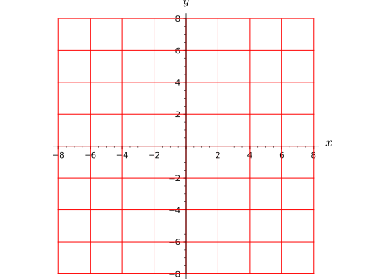
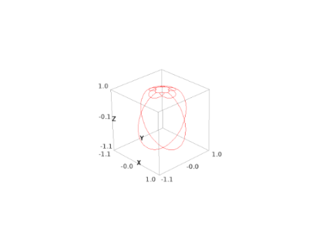
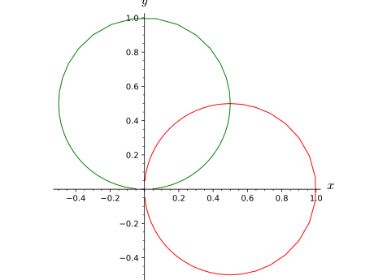
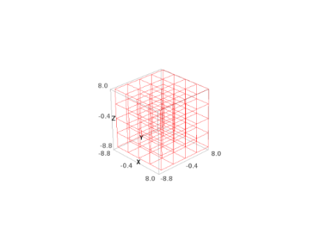
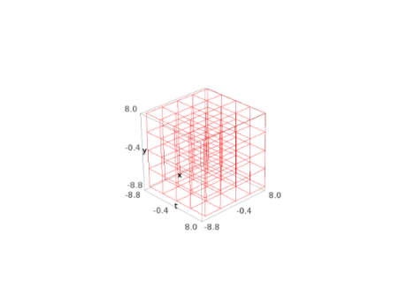

The class Chart implements coordinate charts on a topological
manifold over a topological field \(K\). The subclass RealChart
is devoted to the case \(K=\RR\), for which the concept of coordinate
range is meaningful.
Moreover, RealChart is endowed with some plotting
capabilities (cf. method plot()).
Transition maps between charts are implemented via the class
CoordChange.
AUTHORS:
Eric Gourgoulhon, Michal Bejger (2013-2015) : initial version
Travis Scrimshaw (2015): review tweaks
Eric Gourgoulhon (2019): periodic coordinates,
add calculus_method()
Given a topological manifold \(M\) of dimension \(n\) over a topological
field \(K\), a chart on \(M\) is a pair \((U, \varphi)\), where \(U\) is an
open subset of \(M\) and \(\varphi : U \rightarrow V \subset K^n\) is a
homeomorphism from \(U\) to an open subset \(V\) of \(K^n\).
The components \((x^1, \ldots, x^n)\) of \(\varphi\), defined by
\(\varphi(p) = (x^1(p), \ldots, x^n(p)) \in K^n\) for any point
\(p \in U\), are called the coordinates of the chart \((U, \varphi)\).
INPUT:
domain – open subset \(U\) on which the chart is defined (must be
an instance of TopologicalManifold)
coordinates – (default: ‘’ (empty string)) single string defining
the coordinate symbols, with '' (whitespace) as a separator; each
item has at most three fields, separated by a colon (:):
the coordinate symbol (a letter or a few letters)
(optional) the period of the coordinate if the coordinate is
periodic; the period field must be written as period=T, where
T is the period (see examples below)
(optional) the LaTeX spelling of the coordinate; if not provided the
coordinate symbol given in the first field will be used
The order of fields 2 and 3 does not matter and each of them can be
omitted. If it contains any LaTeX expression, the string coordinates
must be declared with the prefix ‘r’ (for “raw”) to allow for a proper
treatment of LaTeX’s backslash character (see examples below).
If no period and no LaTeX spelling are to be set for any coordinate, the
argument coordinates can be omitted when the shortcut operator
<,> is used to declare the chart (see examples below).
calc_method – (default: None) string defining the calculus
method for computations involving coordinates of the chart; must be
one of
names – (default: None) unused argument, except if
coordinates is not provided; it must then be a tuple containing
the coordinate symbols (this is guaranteed if the shortcut operator
<,> is used)
coord_restrictions: Additional restrictions on the coordinates.
A restriction can be any symbolic equality or inequality involving
the coordinates, such as x>y or x^2+y^2!=0. The items
of the list (or set or frozenset) coord_restrictions are combined
with the and operator; if some restrictions are to be combined with
the or operator instead, they have to be passed as a tuple in some
single item of the list (or set or frozenset) coord_restrictions.
For example:
coord_restrictions=[x > y, (x != 0, y != 0), z^2 < x]
means (x>y)and((x!=0)or(y!=0))and(z^2<x).
If the list coord_restrictions contains only one item, this
item can be passed as such, i.e. writing x>y instead
of the single element list [x>y]. If the chart variables have
not been declared as variables yet, coord_restrictions must
be lambda-quoted.
EXAMPLES:
A chart on a complex 2-dimensional topological manifold:
To manipulate the coordinates \((x,y)\) as global variables,
one has to set:
sage: x,y=X[:]
However, a shortcut is to use the declarator <x,y> in the left-hand
side of the chart declaration (there is then no need to pass the string
'xy' to chart()):
Note that x and y declared in <x,y> are mere Python variable
names and do not have to coincide with the coordinate symbols;
for instance, one may write:
In the above example, the chart X covers entirely the manifold M:
sage: X.domain()Complex 2-dimensional topological manifold M
Of course, one may declare a chart only on an open subset of M:
sage: U=M.open_subset('U')sage: Y.<z1,z2>=U.chart(r'z1:\zeta_1 z2:\zeta_2');YChart (U, (z1, z2))sage: Y.domain()Open subset U of the Complex 2-dimensional topological manifold M
In the above declaration, we have also specified some LaTeX writing
of the coordinates different from the text one:
sage: latex(z1){\zeta_1}
Note the prefix r in front of the string r'z1:\zeta_1z2:\zeta_2';
it makes sure that the backslash character is treated as an ordinary
character, to be passed to the LaTeX interpreter.
Periodic coordinates are declared through the keyword period= in the
coordinate field:
In addition to the Python variable name provided in the operator <.,.>,
the coordinates are accessible by their indices:
sage: Y[0],Y[1](z1, z2)
The index range is that declared during the creation of the manifold. By
default, it starts at 0, but this can be changed via the parameter
start_index:
Manifold subsets have a default chart, which, unless changed via the
method
set_default_chart(),
is the first defined chart on the subset (or on a open subset of it):
The default charts are not privileged charts on the manifold, but rather
charts whose name can be skipped in the argument list of functions having
an optional chart= argument.
The chart map \(\varphi\) acting on a point is obtained by passing
it as an input to the map:
sage: p=M.point((1+i,2),chart=X);pPoint on the Complex 2-dimensional topological manifold Msage: X(p)(I + 1, 2)sage: X(p)==p.coord(X)True
This is deprecated; provide the restrictions at the time of creating
the chart.
INPUT:
restrictions – list of restrictions on the
coordinates, in addition to the ranges declared by the intervals
specified in the chart constructor
A restriction can be any symbolic equality or inequality involving
the coordinates, such as x>y or x^2+y^2!=0. The items
of the list restrictions are combined with the and operator;
if some restrictions are to be combined with the or operator
instead, they have to be passed as a tuple in some single item
of the list restrictions. For example:
restrictions = [x > y, (x != 0, y != 0), z^2 < x]
means (x>y)and((x!=0)or(y!=0))and(z^2<x).
If the list restrictions contains only one item, this
item can be passed as such, i.e. writing x>y instead
of the single element list [x>y].
EXAMPLES:
sage: M=Manifold(2,'M',field='complex',structure='topological')sage: X.<x,y>=M.chart()sage: X.add_restrictions(abs(x)>1)doctest:warning...DeprecationWarning: Chart.add_restrictions is deprecated; provide therestrictions at the time of creating the chartSee https://trac.sagemath.org/32102 for details.sage: X.valid_coordinates(2+i,1)Truesage: X.valid_coordinates(i,1)False
sage: M=Manifold(2,'M',field='complex',structure='topological')sage: X.<x,y>=M.chart()sage: X.codomain()Vector space of dimension 2 over Complex Field with 53 bits of precision
Return the open subset on which the chart is defined.
EXAMPLES:
sage: M=Manifold(2,'M',structure='topological')sage: X.<x,y>=M.chart()sage: X.domain()2-dimensional topological manifold Msage: U=M.open_subset('U')sage: Y.<u,v>=U.chart()sage: Y.domain()Open subset U of the 2-dimensional topological manifold M
where \(V\) is the chart codomain and \((x^1, \ldots, x^n)\) are the
chart coordinates.
INPUT:
expression – a symbolic expression involving the chart
coordinates, to represent \(f(x^1,\ldots, x^n)\)
calc_method – string (default: None): the calculus method
with respect to which the internal expression of the function must be
initialized from expression; one of
None: the chart current calculus method is assumed
expansion_symbol – (default: None) symbolic variable (the
“small parameter”) with respect to which the coordinate expression is
expanded in power series (around the zero value of this variable)
order – integer (default: None); the order of the expansion
if expansion_symbol is not None; the order is defined as
the degree of the polynomial representing the truncated power series
in expansion_symbol.
Warning
The value of order is \(n-1\), where \(n\) is the order of the
big \(O\) in the power series expansion
OUTPUT:
instance of
ChartFunction
representing the coordinate function \(f\)
Return the manifold on which the chart is defined.
EXAMPLES:
sage: M=Manifold(2,'M',structure='topological')sage: U=M.open_subset('U')sage: X.<x,y>=U.chart()sage: X.manifold()2-dimensional topological manifold Msage: X.domain()Open subset U of the 2-dimensional topological manifold M
Define a coordinate function to some Cartesian power of the base field.
If \(n\) and \(m\) are two positive integers and \((U, \varphi)\) is a
chart on a topological manifold \(M\) of dimension \(n\) over a
topological field \(K\), a multi-coordinate function associated
to \((U,\varphi)\) is a map
where \(V\) is the codomain of \(\varphi\). In other words, \(f\) is a
\(K^m\)-valued function of the coordinates associated to the chart
\((U, \varphi)\).
expressions – list (or tuple) of \(m\) elements to construct the
coordinate functions \(f_i\) (\(1\leq i \leq m\)); for
symbolic coordinate functions, this must be symbolic expressions
involving the chart coordinates, while for numerical coordinate
functions, this must be data file names
sage: M=Manifold(2,'M',structure='topological',field=Qp(5));M2-dimensional topological manifold M over the 5-adic Field with capped relative precision 20sage: X.<x,y>=M.chart()sage: X.one_function()1 + O(5^20)sage: X.one_function().display()(x, y) ↦ 1 + O(5^20)
sage: M=Manifold(2,'R^2',structure='topological')sage: c_cart.<x,y>=M.chart()# Cartesian coordinates on R^2
Pulling back a polytope under a chart:
sage: P=Polyhedron(vertices=[[0,0],[1,2],[2,1]]);PA 2-dimensional polyhedron in ZZ^2 defined as the convex hull of 3 verticessage: McP=c_cart.preimage(P);McPSubset x_y_inv_P of the 2-dimensional topological manifold R^2sage: M((1,2))inMcPTruesage: M((2,0))inMcPFalse
Pulling back the interior of a polytope under a chart:
sage: int_P=P.interior();int_PRelative interior of a 2-dimensional polyhedron in ZZ^2 defined as the convex hull of 3 verticessage: McInt_P=c_cart.preimage(int_P,name='McInt_P');McInt_POpen subset McInt_P of the 2-dimensional topological manifold R^2sage: M((0,0))inMcInt_PFalsesage: M((1,1))inMcInt_PTrue
Pulling back a point lattice:
sage: W=span([[1,0],[3,5]],ZZ);WFree module of degree 2 and rank 2 over Integer RingEchelon basis matrix:[1 0][0 5]sage: McW=c_cart.pullback(W,name='McW');McWSubset McW of the 2-dimensional topological manifold R^2sage: M((4,5))inMcWTruesage: M((4,4))inMcWFalse
Pulling back a real vector subspaces:
sage: V=span([[1,2]],RR);VVector space of degree 2 and dimension 1 over Real Field with 53 bits of precisionBasis matrix:[1.00000000000000 2.00000000000000]sage: McV=c_cart.pullback(V,name='McV');McVSubset McV of the 2-dimensional topological manifold R^2sage: M((2,4))inMcVTruesage: M((1,0))inMcVFalse
Pulling back a finite set of points:
sage: F=Family([vector(QQ,[1,2],immutable=True),....: vector(QQ,[2,3],immutable=True)])sage: McF=c_cart.pullback(F,name='McF');McFSubset McF of the 2-dimensional topological manifold R^2sage: M((2,3))inMcFTruesage: M((0,0))inMcFFalse
Pulling back the integers:
sage: R=manifolds.RealLine();RReal number line ℝsage: McZ=R.canonical_chart().pullback(ZZ,name='ℤ');McZSubset ℤ of the Real number line ℝsage: R((3/2,))inMcZFalsesage: R((-2,))inMcZTrue
sage: M=Manifold(2,'R^2',structure='topological')sage: c_cart.<x,y>=M.chart()# Cartesian coordinates on R^2
Pulling back a polytope under a chart:
sage: P=Polyhedron(vertices=[[0,0],[1,2],[2,1]]);PA 2-dimensional polyhedron in ZZ^2 defined as the convex hull of 3 verticessage: McP=c_cart.preimage(P);McPSubset x_y_inv_P of the 2-dimensional topological manifold R^2sage: M((1,2))inMcPTruesage: M((2,0))inMcPFalse
Pulling back the interior of a polytope under a chart:
sage: int_P=P.interior();int_PRelative interior of a 2-dimensional polyhedron in ZZ^2 defined as the convex hull of 3 verticessage: McInt_P=c_cart.preimage(int_P,name='McInt_P');McInt_POpen subset McInt_P of the 2-dimensional topological manifold R^2sage: M((0,0))inMcInt_PFalsesage: M((1,1))inMcInt_PTrue
Pulling back a point lattice:
sage: W=span([[1,0],[3,5]],ZZ);WFree module of degree 2 and rank 2 over Integer RingEchelon basis matrix:[1 0][0 5]sage: McW=c_cart.pullback(W,name='McW');McWSubset McW of the 2-dimensional topological manifold R^2sage: M((4,5))inMcWTruesage: M((4,4))inMcWFalse
Pulling back a real vector subspaces:
sage: V=span([[1,2]],RR);VVector space of degree 2 and dimension 1 over Real Field with 53 bits of precisionBasis matrix:[1.00000000000000 2.00000000000000]sage: McV=c_cart.pullback(V,name='McV');McVSubset McV of the 2-dimensional topological manifold R^2sage: M((2,4))inMcVTruesage: M((1,0))inMcVFalse
Pulling back a finite set of points:
sage: F=Family([vector(QQ,[1,2],immutable=True),....: vector(QQ,[2,3],immutable=True)])sage: McF=c_cart.pullback(F,name='McF');McFSubset McF of the 2-dimensional topological manifold R^2sage: M((2,3))inMcFTruesage: M((0,0))inMcFFalse
Pulling back the integers:
sage: R=manifolds.RealLine();RReal number line ℝsage: McZ=R.canonical_chart().pullback(ZZ,name='ℤ');McZSubset ℤ of the Real number line ℝsage: R((3/2,))inMcZFalsesage: R((-2,))inMcZTrue
Return the restriction of self to some open subset of its domain.
If the current chart is \((U,\varphi)\), a restriction (or subchart)
is a chart \((V,\psi)\) such that \(V\subset U\) and \(\psi = \varphi |_V\).
If such subchart has not been defined yet, it is constructed here.
The coordinates of the subchart bare the same names as the coordinates
of the current chart.
INPUT:
subset – open subset \(V\) of the chart domain \(U\) (must be an
instance of TopologicalManifold)
restrictions – (default: None) list of coordinate
restrictions defining the subset \(V\)
A restriction can be any symbolic equality or inequality involving
the coordinates, such as x>y or x^2+y^2!=0. The items
of the list restrictions are combined with the and operator;
if some restrictions are to be combined with the or operator
instead, they have to be passed as a tuple in some single item
of the list restrictions. For example:
restrictions = [x > y, (x != 0, y != 0), z^2 < x]
means (x>y)and((x!=0)or(y!=0))and(z^2<x).
If the list restrictions contains only one item, this
item can be passed as such, i.e. writing x>y instead
of the single element list [x>y].
where \(K\) is the manifold’s base field. In other words, the
transition map expresses the coordinates \((y^1, \ldots, y^n)\) of
\((V, \psi)\) in terms of the coordinates \((x^1, \ldots, x^n)\) of
\((U, \varphi)\) on the open subset where the two charts intersect,
i.e. on \(U \cap V\).
INPUT:
other – the chart \((V, \psi)\)
transformations – tuple (or list) \((Y_1, \ldots, Y_n)\), where
\(Y_i\) is the symbolic expression of the coordinate \(y^i\) in terms
of the coordinates \((x^1, \ldots, x^n)\)
intersection_name – (default: None) name to be given to the
subset \(U \cap V\) if the latter differs from \(U\) or \(V\)
restrictions1 – (default: None) list of conditions on the
coordinates of the current chart that define \(U \cap V\) if the
latter differs from \(U\)
restrictions2 – (default: None) list of conditions on the
coordinates of the chart \((V,\psi)\) that define \(U \cap V\) if the
latter differs from \(V\)
A restriction can be any symbolic equality or inequality involving
the coordinates, such as x>y or x^2+y^2!=0. The items
of the list restrictions are combined with the and operator;
if some restrictions are to be combined with the or operator
instead, they have to be passed as a tuple in some single item
of the list restrictions. For example:
restrictions = [x > y, (x != 0, y != 0), z^2 < x]
means (x>y)and((x!=0)or(y!=0))and(z^2<x).
If the list restrictions contains only one item, this
item can be passed as such, i.e. writing x>y instead
of the single element list [x>y].
OUTPUT:
the transition map \(\psi \circ \varphi^{-1}\) defined on
\(U \cap V\) as a CoordChange
EXAMPLES:
Transition map between two stereographic charts on the circle \(S^1\):
sage: M=Manifold(1,'S^1',structure='topological')sage: U=M.open_subset('U')# Complement of the North polesage: cU.<x>=U.chart()# Stereographic chart from the North polesage: V=M.open_subset('V')# Complement of the South polesage: cV.<y>=V.chart()# Stereographic chart from the South polesage: M.declare_union(U,V)# S^1 is the union of U and Vsage: trans=cU.transition_map(cV,1/x,intersection_name='W',....: restrictions1=x!=0,restrictions2=y!=0)sage: transChange of coordinates from Chart (W, (x,)) to Chart (W, (y,))sage: trans.display()y = 1/x
The subset \(W\), intersection of \(U\) and \(V\), has been created by
transition_map():
sage: F=M.subset_family();FSet {S^1, U, V, W} of open subsets of the 1-dimensional topological manifold S^1sage: W=F['W']sage: WisU.intersection(V)Truesage: M.atlas()[Chart (U, (x,)), Chart (V, (y,)), Chart (W, (x,)), Chart (W, (y,))]
Transition map between the spherical chart and the Cartesian
one on \(\RR^2\):
sage: M=Manifold(2,'R^2',structure='topological')sage: c_cart.<x,y>=M.chart()sage: U=M.open_subset('U')# the complement of the half line {y=0, x >= 0}sage: c_spher.<r,phi>=U.chart(r'r:(0,+oo) phi:(0,2*pi):\phi')sage: trans=c_spher.transition_map(c_cart,(r*cos(phi),r*sin(phi)),....: restrictions2=(y!=0,x<0))sage: transChange of coordinates from Chart (U, (r, phi)) to Chart (U, (x, y))sage: trans.display()x = r*cos(phi)y = r*sin(phi)
In this case, no new subset has been created since \(U \cap M = U\):
sage: M.subset_family()Set {R^2, U} of open subsets of the 2-dimensional topological manifold R^2
but a new chart has been created: \((U, (x, y))\):
Example of use with the keyword parameters to set a specific value
to a parameter appearing in the coordinate restrictions:
sage: var('a')# the parameter is a symbolic variableasage: Y.<u,v>=M.chart(coord_restrictions=lambdau,v:abs(v)<a)sage: Y.valid_coordinates(1,i,parameters={a:2})# setting a=2Truesage: Y.valid_coordinates(1,2*i,parameters={a:2})False
sage: M=Manifold(2,'M',structure='topological',field=Qp(5));M2-dimensional topological manifold M over the 5-adic Field with capped relative precision 20sage: X.<x,y>=M.chart()sage: X.zero_function()0sage: X.zero_function().display()(x, y) ↦ 0
Transition map between two charts of a topological manifold.
Giving two coordinate charts \((U, \varphi)\) and \((V, \psi)\) on a
topological manifold \(M\) of dimension \(n\) over a topological field \(K\),
the transition map from\((U, \varphi)\)to\((V, \psi)\) is the map
In other words, the transition map \(\psi \circ \varphi^{-1}\) expresses
the coordinates \((y^1, \ldots, y^n)\) of \((V, \psi)\) in terms of the
coordinates \((x^1, \ldots, x^n)\) of \((U, \varphi)\) on the open subset
where the two charts intersect, i.e. on \(U \cap V\).
INPUT:
chart1 – chart \((U, \varphi)\)
chart2 – chart \((V, \psi)\)
transformations – tuple (or list) \((Y_1, \ldots, Y_2)\), where
\(Y_i\) is the symbolic expression of the coordinate \(y^i\) in terms
of the coordinates \((x^1, \ldots, x^n)\)
EXAMPLES:
Transition map on a 2-dimensional topological manifold:
sage: M=Manifold(2,'M',structure='topological')sage: X.<x,y>=M.chart()sage: Y.<u,v>=M.chart()sage: X_to_Y=X.transition_map(Y,[x+y,x-y])sage: X_to_YChange of coordinates from Chart (M, (x, y)) to Chart (M, (u, v))sage: type(X_to_Y)<class 'sage.manifolds.chart.CoordChange'>sage: X_to_Y.display()u = x + yv = x - y
The output is either text-formatted (console mode) or LaTeX-formatted
(notebook mode).
EXAMPLES:
From spherical coordinates to Cartesian ones in the plane:
sage: M=Manifold(2,'R^2',structure='topological')sage: U=M.open_subset('U')# the complement of the half line {y=0, x>= 0}sage: c_cart.<x,y>=U.chart()sage: c_spher.<r,ph>=U.chart(r'r:(0,+oo) ph:(0,2*pi):\phi')sage: spher_to_cart=c_spher.transition_map(c_cart,[r*cos(ph),r*sin(ph)])sage: spher_to_cart.display()x = r*cos(ph)y = r*sin(ph)sage: latex(spher_to_cart.display())\left\{\begin{array}{lcl} x & = & r \cos\left({\phi}\right) \\ y & = & r \sin\left({\phi}\right) \end{array}\right.
The output is either text-formatted (console mode) or LaTeX-formatted
(notebook mode).
EXAMPLES:
From spherical coordinates to Cartesian ones in the plane:
sage: M=Manifold(2,'R^2',structure='topological')sage: U=M.open_subset('U')# the complement of the half line {y=0, x>= 0}sage: c_cart.<x,y>=U.chart()sage: c_spher.<r,ph>=U.chart(r'r:(0,+oo) ph:(0,2*pi):\phi')sage: spher_to_cart=c_spher.transition_map(c_cart,[r*cos(ph),r*sin(ph)])sage: spher_to_cart.display()x = r*cos(ph)y = r*sin(ph)sage: latex(spher_to_cart.display())\left\{\begin{array}{lcl} x & = & r \cos\left({\phi}\right) \\ y & = & r \sin\left({\phi}\right) \end{array}\right.
dom2 – (default: None) open subset of the domain of
chart2; if None, dom1 is assumed
OUTPUT:
the transition map between the charts restricted to the
specified subsets
EXAMPLES:
sage: M=Manifold(2,'M',structure='topological')sage: X.<x,y>=M.chart()sage: Y.<u,v>=M.chart()sage: X_to_Y=X.transition_map(Y,[x+y,x-y])sage: U=M.open_subset('U',coord_def={X:x>0,Y:u+v>0})sage: X_to_Y_U=X_to_Y.restrict(U);X_to_Y_UChange of coordinates from Chart (U, (x, y)) to Chart (U, (u, v))sage: X_to_Y_U.display()u = x + yv = x - y
Sets the inverse of the coordinate transformation.
This is useful when the automatic computation via inverse()
fails.
INPUT:
transformations – the inverse transformations expressed as a
list of the expressions of the “old” coordinates in terms of the
“new” ones
kwds – optional arguments; valid keywords are
check (default: True) – boolean determining whether the
provided transformations are checked to be indeed the inverse
coordinate transformations
verbose (default: False) – boolean determining whether
some details of the check are printed out; if False, no
output is printed if the check is passed (see example below)
EXAMPLES:
From spherical coordinates to Cartesian ones in the plane:
sage: M=Manifold(2,'R^2',structure='topological')sage: U=M.open_subset('U')# complement of the half line {y=0, x>= 0}sage: c_cart.<x,y>=U.chart()sage: c_spher.<r,ph>=U.chart(r'r:(0,+oo) ph:(0,2*pi):\phi')sage: spher_to_cart=c_spher.transition_map(c_cart,....: [r*cos(ph),r*sin(ph)])sage: spher_to_cart.set_inverse(sqrt(x^2+y^2),atan2(y,x))Check of the inverse coordinate transformation: r == r *passed* ph == arctan2(r*sin(ph), r*cos(ph)) **failed** x == x *passed* y == y *passed*NB: a failed report can reflect a mere lack of simplification.
As indicated, the failure for ph is due to a lack of simplification
of the arctan2 term, not to any error in the provided inverse
formulas.
We have now:
sage: spher_to_cart.inverse()Change of coordinates from Chart (U, (x, y)) to Chart (U, (r, ph))sage: spher_to_cart.inverse().display()r = sqrt(x^2 + y^2)ph = arctan2(y, x)sage: M.coord_changes()# random (dictionary output){(Chart (U, (r, ph)), Chart (U, (x, y))): Change of coordinates from Chart (U, (r, ph)) to Chart (U, (x, y)), (Chart (U, (x, y)), Chart (U, (r, ph))): Change of coordinates from Chart (U, (x, y)) to Chart (U, (r, ph))}
One can suppress the check of the provided formulas by means of the
optional argument check=False:
However, it is not recommended to do so, the check being (obviously)
useful to avoid some mistake. For instance, if the term
sqrt(x^2+y^2) contains a typo (x^3 instead of x^2),
we get:
sage: spher_to_cart.set_inverse(sqrt(x^3+y^2),atan2(y,x))Check of the inverse coordinate transformation: r == sqrt(r*cos(ph)^3 + sin(ph)^2)*r **failed** ph == arctan2(r*sin(ph), r*cos(ph)) **failed** x == sqrt(x^3 + y^2)*x/sqrt(x^2 + y^2) **failed** y == sqrt(x^3 + y^2)*y/sqrt(x^2 + y^2) **failed**NB: a failed report can reflect a mere lack of simplification.
sage: X1_to_X2.set_inverse((u+v)/2,(u-v)/2,verbose=True)Check of the inverse coordinate transformation: x == x *passed* y == y *passed* u == u *passed* v == v *passed*
Given a topological manifold \(M\) of dimension \(n\) over \(\RR\), a chart
on \(M\) is a pair \((U,\varphi)\), where \(U\) is an open subset of \(M\) and
\(\varphi : U \to V \subset \RR^n\) is a homeomorphism from \(U\) to
an open subset \(V\) of \(\RR^n\).
The components \((x^1, \ldots, x^n)\) of \(\varphi\), defined by
\(\varphi(p) = (x^1(p), \ldots, x^n(p))\in \RR^n\) for any point
\(p \in U\), are called the coordinates of the chart \((U, \varphi)\).
INPUT:
domain – open subset \(U\) on which the chart is defined
coordinates – (default: ‘’ (empty string)) single string defining
the coordinate symbols, with '' (whitespace) as a separator; each
item has at most four fields, separated by a colon (:):
the coordinate symbol (a letter or a few letters)
(optional) the interval \(I\) defining the coordinate range: if not
provided, the coordinate is assumed to span all \(\RR\); otherwise
\(I\) must be provided in the form (a,b) (or equivalently
]a,b[); the bounds a and b can be +/-Infinity,
Inf, infinity, inf or oo; for singular
coordinates, non-open intervals such as [a,b] and (a,b]
(or equivalently ]a,b]) are allowed; note that the interval
declaration must not contain any whitespace
(optional) indicator of the periodic character of the coordinate,
either as period=T, where T is the period, or as the keyword
periodic (the value of the period is then deduced from the
interval \(I\) declared in field 2; see examples below)
(optional) the LaTeX spelling of the coordinate; if not provided the
coordinate symbol given in the first field will be used
The order of fields 2 to 4 does not matter and each of them can be
omitted. If it contains any LaTeX expression, the string coordinates
must be declared with the prefix ‘r’ (for “raw”) to allow for a proper
treatment of LaTeX’s backslash character (see examples below).
If interval range, no period and no LaTeX spelling are to be set for any
coordinate, the argument coordinates can be omitted when the shortcut
operator <,> is used to declare the chart (see examples below).
calc_method – (default: None) string defining the calculus
method for computations involving coordinates of the chart; must be
one of
names – (default: None) unused argument, except if
coordinates is not provided; it must then be a tuple containing
the coordinate symbols (this is guaranteed if the shortcut operator
<,> is used)
coord_restrictions: Additional restrictions on the coordinates.
A restriction can be any symbolic equality or inequality involving
the coordinates, such as x>y or x^2+y^2!=0. The items
of the list (or set or frozenset) coord_restrictions are combined
with the and operator; if some restrictions are to be combined with
the or operator instead, they have to be passed as a tuple in some
single item of the list (or set or frozenset) coord_restrictions.
For example:
coord_restrictions=[x > y, (x != 0, y != 0), z^2 < x]
means (x>y)and((x!=0)or(y!=0))and(z^2<x).
If the list coord_restrictions contains only one item, this
item can be passed as such, i.e. writing x>y instead
of the single element list [x>y]. If the chart variables have
not been declared as variables yet, coord_restrictions must
be lambda-quoted.
EXAMPLES:
Cartesian coordinates on \(\RR^3\):
sage: M=Manifold(3,'R^3',r'\RR^3',structure='topological',....: start_index=1)sage: c_cart=M.chart('x y z');c_cartChart (R^3, (x, y, z))sage: type(c_cart)<class 'sage.manifolds.chart.RealChart'>
To have the coordinates accessible as global variables, one has to set:
sage: (x,y,z)=c_cart[:]
However, a shortcut is to use the declarator <x,y,z> in the left-hand
side of the chart declaration (there is then no need to pass the string
'xyz' to chart()):
sage: M=Manifold(3,'R^3',r'\RR^3',structure='topological',....: start_index=1)sage: c_cart.<x,y,z>=M.chart();c_cartChart (R^3, (x, y, z))
The coordinates are then immediately accessible:
sage: yysage: yisc_cart[2]True
Note that x,y,z declared in <x,y,z> are mere Python variable
names and do not have to coincide with the coordinate symbols; for
instance, one may write:
sage: M=Manifold(3,'R^3',r'\RR^3',structure='topological',....: start_index=1)sage: c_cart.<x1,y1,z1>=M.chart('x y z');c_cartChart (R^3, (x, y, z))
Then y is not known as a global variable and the coordinate \(y\)
is accessible only through the global variable y1:
sage: y1ysage: y1isc_cart[2]True
However, having the name of the Python variable coincide with the
coordinate symbol is quite convenient; so it is recommended to declare:
sage: forget()# for doctests onlysage: M=Manifold(3,'R^3',r'\RR^3',structure='topological',start_index=1)sage: c_cart.<x,y,z>=M.chart()
Spherical coordinates on the subset \(U\) of \(\RR^3\) that is the
complement of the half-plane \(\{y=0, x \geq 0\}\):
The full set of coordinates is obtained by means of the slice [:]:
sage: c_cart[:](x, y, z)sage: c_spher[:](r, th, ph)
Let us check that the declared coordinate ranges have been taken into
account:
sage: c_cart.coord_range()x: (-oo, +oo); y: (-oo, +oo); z: (-oo, +oo)sage: c_spher.coord_range()r: (0, +oo); th: (0, pi); ph: (0, 2*pi)sage: bool(th>0andth<pi)Truesage: assumptions()# list all current symbolic assumptions[x is real, y is real, z is real, r is real, r > 0, th is real, th > 0, th < pi, ph is real, ph > 0, ph < 2*pi]
The coordinate ranges are used for simplifications:
sage: simplify(abs(r))# r has been declared to lie in the interval (0,+oo)rsage: simplify(abs(x))# no positive range has been declared for xabs(x)
A coordinate can be declared periodic by adding the keyword periodic
to its range:
Manifold subsets have a default chart, which, unless changed
via the method
set_default_chart(),
is the first defined chart on the subset (or on a open subset of it):
The default charts are not privileged charts on the manifold, but rather
charts whose name can be skipped in the argument list of functions having
an optional chart= argument.
The chart map \(\varphi\) acting on a point is obtained by means of the
call operator, i.e. the operator ():
sage: p=M.point((1,0,-2));pPoint on the 3-dimensional topological manifold R^3sage: c_cart(p)(1, 0, -2)sage: c_cart(p)==p.coord(c_cart)Truesage: q=M.point((2,pi/2,pi/3),chart=c_spher)# point defined by its spherical coordinatessage: c_spher(q)(2, 1/2*pi, 1/3*pi)sage: c_spher(q)==q.coord(c_spher)Truesage: a=U.point((1,pi/2,pi))# the default coordinates on U are the spherical onessage: c_spher(a)(1, 1/2*pi, pi)sage: c_spher(a)==a.coord(c_spher)True
Cartesian coordinates on \(U\) as an example of chart construction with
coordinate restrictions: since \(U\) is the complement of the half-plane
\(\{y = 0, x \geq 0\}\), we must have \(y \neq 0\) or \(x < 0\) on U.
Accordingly, we set:
This is deprecated; provide the restrictions at the time of creating
the chart.
INPUT:
restrictions – list of restrictions on the
coordinates, in addition to the ranges declared by the intervals
specified in the chart constructor
A restriction can be any symbolic equality or inequality involving
the coordinates, such as x>y or x^2+y^2!=0. The items
of the list restrictions are combined with the and operator;
if some restrictions are to be combined with the or operator
instead, they have to be passed as a tuple in some single item
of the list restrictions. For example:
restrictions = [x > y, (x != 0, y != 0), z^2 < x]
means (x>y)and((x!=0)or(y!=0))and(z^2<x).
If the list restrictions contains only one item, this
item can be passed as such, i.e. writing x>y instead
of the single element list [x>y].
EXAMPLES:
Cartesian coordinates on the open unit disc in \(\RR^2\):
sage: M=Manifold(2,'M',structure='topological')# the open unit discsage: X.<x,y>=M.chart()sage: X.add_restrictions(x^2+y^2<1)doctest:warning...DeprecationWarning: Chart.add_restrictions is deprecated; provide therestrictions at the time of creating the chartSee https://trac.sagemath.org/32102 for details.sage: X.valid_coordinates(0,2)Falsesage: X.valid_coordinates(0,1/3)True
sage: M=Manifold(2,'R^2',structure='topological')sage: U=M.open_subset('U')# the complement of the half line {y=0, x >= 0}sage: c_spher.<r,phi>=U.chart(r'r:(0,+oo) phi:(0,2*pi):\phi')sage: c_spher.codomain()The Cartesian product of ((0, +oo), (0, 2*pi))sage: M=Manifold(3,'R^3',r'\RR^3',structure='topological',start_index=1)sage: c_cart.<x,y,z>=M.chart()sage: c_cart.codomain()Vector space of dimension 3 over Real Field with 53 bits of precision
In the current implementation, the codomain of periodic coordinates are represented
by a fundamental domain:
Plot self as a grid in a Cartesian graph based on
the coordinates of some ambient chart.
The grid is formed by curves along which a chart coordinate
varies, the other coordinates being kept fixed. It is drawn in
terms of two (2D graphics) or three (3D graphics) coordinates
of another chart, called hereafter the ambient chart.
The ambient chart is related to the current chart either by
a transition map if both charts are defined on the same manifold,
or by the coordinate expression of some continuous map (typically an
immersion). In the latter case, the two charts may be defined on two
different manifolds.
INPUT:
chart – (default: None) the ambient chart (see above); if
None, the ambient chart is set to the current chart
ambient_coords – (default: None) tuple containing the 2
or 3 coordinates of the ambient chart in terms of which the plot
is performed; if None, all the coordinates of the ambient
chart are considered
mapping – (default: None)
ContinuousMap; continuous
manifold map providing the link between the current chart and the
ambient chart (cf. above); if None, both charts are supposed
to be defined on the same manifold and related by some transition
map (see transition_map())
fixed_coords – (default: None) dictionary with keys the
chart coordinates that are not drawn and with values the fixed
value of these coordinates; if None, all the coordinates of the
current chart are drawn
ranges – (default: None) dictionary with keys the
coordinates to be drawn and values tuples (x_min,x_max)
specifying the coordinate range for the plot; if None, the
entire coordinate range declared during the chart construction
is considered (with -Infinity replaced by -max_range
and +Infinity by max_range)
number_values – (default: None) either an integer or a
dictionary with keys the coordinates to be drawn and values the
number of constant values of the coordinate to be considered; if
number_values is a single integer, it represents the number of
constant values for all coordinates; if number_values is None,
it is set to 9 for a 2D plot and to 5 for a 3D plot
steps – (default: None) dictionary with keys the coordinates
to be drawn and values the step between each constant value of
the coordinate; if None, the step is computed from the coordinate
range (specified in ranges) and number_values. On the contrary
if the step is provided for some coordinate, the corresponding
number of constant values is deduced from it and the coordinate range.
parameters – (default: None) dictionary giving the numerical
values of the parameters that may appear in the relation between
the two coordinate systems
max_range – (default: 8) numerical value substituted to
+Infinity if the latter is the upper bound of the range of a
coordinate for which the plot is performed over the entire coordinate
range (i.e. for which no specific plot range has been set in
ranges); similarly -max_range is the numerical valued
substituted for -Infinity
color – (default: 'red') either a single color or a
dictionary of colors, with keys the coordinates to be drawn,
representing the colors of the lines along which the coordinate
varies, the other being kept constant; if color is a single
color, it is used for all coordinate lines
style – (default: '-') either a single line style or
a dictionary of line styles, with keys the coordinates to be
drawn, representing the style of the lines along which the
coordinate varies, the other being kept constant; if style
is a single style, it is used for all coordinate lines;
NB: style is effective only for 2D plots
thickness – (default: 1) either a single line thickness or a
dictionary of line thicknesses, with keys the coordinates to be drawn,
representing the thickness of the lines along which the coordinate
varies, the other being kept constant; if thickness is a single
value, it is used for all coordinate lines
plot_points – (default: 75) either a single number of points or
a dictionary of integers, with keys the coordinates to be drawn,
representing the number of points to plot the lines along which the
coordinate varies, the other being kept constant; if plot_points
is a single integer, it is used for all coordinate lines
label_axes – (default: True) boolean determining whether the
labels of the ambient coordinate axes shall be added to the graph;
can be set to False if the graph is 3D and must be superposed
with another graph
OUTPUT:
a graphic object, either a Graphics
for a 2D plot (i.e. based on 2 coordinates of the ambient chart)
or a Graphics3d for a 3D plot
(i.e. based on 3 coordinates of the ambient chart)
EXAMPLES:
A 2-dimensional chart plotted in terms of itself results in a
rectangular grid:
sage: R2=Manifold(2,'R^2',structure='topological')# the Euclidean planesage: c_cart.<x,y>=R2.chart()# Cartesian coordinatessage: g=c_cart.plot()# equivalent to c_cart.plot(c_cart)sage: gGraphics object consisting of 18 graphics primitives

Grid of polar coordinates in terms of Cartesian coordinates in the
Euclidean plane:
sage: U=R2.open_subset('U',coord_def={c_cart:(y!=0,x<0)})# the complement of the segment y=0 and x>0sage: c_pol.<r,ph>=U.chart(r'r:(0,+oo) ph:(0,2*pi):\phi')# polar coordinates on Usage: pol_to_cart=c_pol.transition_map(c_cart,[r*cos(ph),r*sin(ph)])sage: g=c_pol.plot(c_cart)sage: gGraphics object consisting of 18 graphics primitives
sage: g=c_pol.plot(c_cart,fixed_coords={r:2})# draw a circle of radius r=2
sage: g=c_pol.plot(c_cart,fixed_coords={ph:pi/4})# draw a segment at phi=pi/4
An example with the ambient chart lying in an another manifold (the
plot is then performed via some manifold map passed as the
argument mapping): 3D plot of the stereographic charts on the
2-sphere:
sage: S2=Manifold(2,'S^2',structure='topological')# the 2-spheresage: U=S2.open_subset('U');V=S2.open_subset('V')# complement of the North and South pole, respectivelysage: S2.declare_union(U,V)sage: c_xy.<x,y>=U.chart()# stereographic coordinates from the North polesage: c_uv.<u,v>=V.chart()# stereographic coordinates from the South polesage: xy_to_uv=c_xy.transition_map(c_uv,(x/(x^2+y^2),y/(x^2+y^2)),....: intersection_name='W',restrictions1=x^2+y^2!=0,....: restrictions2=u^2+v^2!=0)sage: uv_to_xy=xy_to_uv.inverse()sage: R3=Manifold(3,'R^3',structure='topological')# the Euclidean space R^3sage: c_cart.<X,Y,Z>=R3.chart()# Cartesian coordinates on R^3sage: Phi=S2.continuous_map(R3,{(c_xy,c_cart):[2*x/(1+x^2+y^2),....: 2*y/(1+x^2+y^2),(x^2+y^2-1)/(1+x^2+y^2)],....: (c_uv,c_cart):[2*u/(1+u^2+v^2),....: 2*v/(1+u^2+v^2),(1-u^2-v^2)/(1+u^2+v^2)]},....: name='Phi',latex_name=r'\Phi')# Embedding of S^2 in R^3sage: g=c_xy.plot(c_cart,mapping=Phi)sage: gGraphics3d Object

NB: to get a better coverage of the whole sphere, one should increase
the coordinate sampling via the argument number_values or the
argument steps (only the default value, number_values=5, is
used here, which is pretty low).
South stereographic chart drawned in terms of the North one (we split
the plot in four parts to avoid the singularity at \((u,v)=(0,0)\)):
sage: W=U.intersection(V)# the subset common to both chartssage: c_uvW=c_uv.restrict(W)# chart (W,(u,v))sage: gSN1=c_uvW.plot(c_xy,ranges={u:[-6.,-0.02],v:[-6.,-0.02]})# long timesage: gSN2=c_uvW.plot(c_xy,ranges={u:[-6.,-0.02],v:[0.02,6.]})# long timesage: gSN3=c_uvW.plot(c_xy,ranges={u:[0.02,6.],v:[-6.,-0.02]})# long timesage: gSN4=c_uvW.plot(c_xy,ranges={u:[0.02,6.],v:[0.02,6.]})# long timesage: show(gSN1+gSN2+gSN3+gSN4,xmin=-1.5,xmax=1.5,ymin=-1.5,ymax=1.5)# long time
The coordinate line \(u = 1\) (red) and the coordinate line \(v = 1\)
(green) on the same plot:
sage: gu1=c_uvW.plot(c_xy,fixed_coords={u:1},max_range=20,plot_points=300)# long timesage: gv1=c_uvW.plot(c_xy,fixed_coords={v:1},max_range=20,plot_points=300,color='green')# long timesage: gu1+gv1# long timeGraphics object consisting of 2 graphics primitives

Note that we have set max_range=20 to have a wider range for
the coordinates \(u\) and \(v\), i.e. to have \([-20, 20]\) instead of
the default \([-8, 8]\).
A 3-dimensional chart plotted in terms of itself results in a 3D
rectangular grid:
sage: g=c_cart.plot()# equivalent to c_cart.plot(c_cart) # long timesage: g# long timeGraphics3d Object

A 4-dimensional chart plotted in terms of itself (the plot is
performed for at most 3 coordinates, which must be specified via
the argument ambient_coords):
sage: M=Manifold(4,'M',structure='topological')sage: X.<t,x,y,z>=M.chart()sage: g=X.plot(ambient_coords=(t,x,y))# the coordinate z is not depicted # long timesage: g# long timeGraphics3d Object

sage: g=X.plot(ambient_coords=(t,y))# the coordinates x and z are not depictedsage: gGraphics object consisting of 18 graphics primitives
Note that the default values of some arguments of the method plot
are stored in the dictionary plot.options:
Return the restriction of the chart to some open subset of its domain.
If the current chart is \((U, \varphi)\), a restriction (or subchart)
is a chart \((V, \psi)\) such that \(V \subset U\) and \(\psi = \varphi|_V\).
If such subchart has not been defined yet, it is constructed here.
The coordinates of the subchart bare the same names as the coordinates
of the current chart.
INPUT:
subset – open subset \(V\) of the chart domain \(U\) (must be an
instance of TopologicalManifold)
restrictions – (default: None) list of coordinate
restrictions defining the subset \(V\)
A restriction can be any symbolic equality or inequality involving
the coordinates, such as x>y or x^2+y^2!=0. The items
of the list restrictions are combined with the and operator;
if some restrictions are to be combined with the or operator
instead, they have to be passed as a tuple in some single item
of the list restrictions. For example:
restrictions = [x > y, (x != 0, y != 0), z^2 < x]
means (x>y)and((x!=0)or(y!=0))and(z^2<x).
If the list restrictions contains only one item, this
item can be passed as such, i.e. writing x>y instead
of the single element list [x>y].
Cartesian coordinates on the unit open disc in \(\RR^2\) as a subchart
of the global Cartesian coordinates:
sage: M=Manifold(2,'R^2',structure='topological')sage: c_cart.<x,y>=M.chart()# Cartesian coordinates on R^2sage: D=M.open_subset('D')# the unit open discsage: c_cart_D=c_cart.restrict(D,x^2+y^2<1)sage: p=M.point((1/2,0))sage: pinDTruesage: q=M.point((1,2))sage: qinDFalse
Cartesian coordinates on the annulus \(1 < \sqrt{x^2 + y^2} < 2\):
Check whether a tuple of float coordinates can be the coordinates
of a point in the chart domain.
This version is optimized for float numbers, and cannot accept
parameters nor tolerance. The chart restriction must also be
specified in CNF (i.e. a list of tuples).
INPUT:
*coordinates – coordinate values
OUTPUT:
True if the coordinate values are admissible in the chart
range and False otherwise
EXAMPLES:
Cartesian coordinates on a square interior:
sage: forget()# for doctest onlysage: M=Manifold(2,'M',structure='topological')# the square interiorsage: X.<x,y>=M.chart('x:(-2,2) y:(-2,2)')sage: X.valid_coordinates_numerical(0,1)Truesage: X.valid_coordinates_numerical(-3/2,5/4)Truesage: X.valid_coordinates_numerical(0,3)False